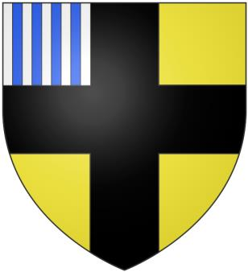

Identité
République de Meuse
Contexte Régional
Chronologie
Analyse 2026
Avril 2023 :
Tentative d’élimination ciblée.
Août 2023 :
Accusations non conventionnelles.
Octobre 2023 :
Crash aérien.
Février 2024 :
Attaques dépôts munitions.
Avril 2024 :
Nouvel incident aérien.
Parties prenantes
Front de Libération du Verdunstan (FLV)

Fédération Alsacienne
République de Meuse
République Champenoise